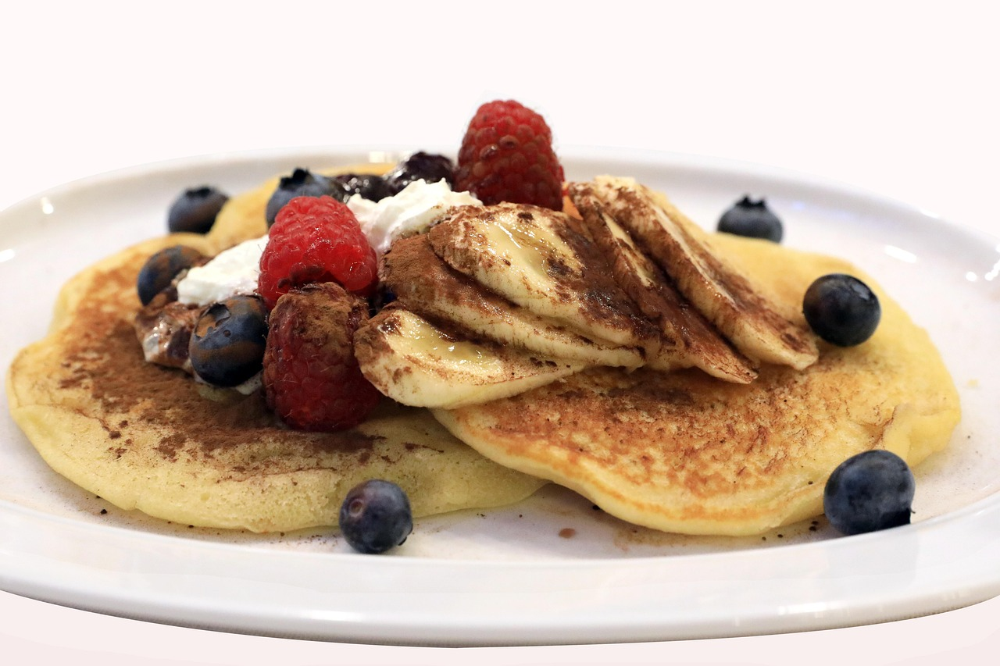

Pancake
Description

Pancakes are soft, flat and round cakes made from a batter of flour, eggs,
milk and leavening agent like baking powder.
They are typically cooked on a frying pan and served warm, often with toppings such as syrup,
butter, fruits or honey.
Ingredients
- 1 1/2 cups all-purpose flour
- 3 1/2 teaspoons baking powder
- 1 tablespoon white sugar
- 1/4 teaspoon salt, or more to taste
- 1 1/4 cups milk
- 3 tablespoons butter, melted
- 1 large egg
Steps
- Gather all ingredients
- Sift flour, baking powder, sugar and salt together in a large bowl. Make a well in the
center and add milk, melted butter and egg; mix until smooth.
- Heat a lightly oiled griddle or pan over medium-high heat. Pour or scoop the batter onto
the griddle, using approximately 1/4 cup for each pancake; cook until bubbles form and the
edges are dry, about 2 to 3 minutes.
- Flip and cook until browned on the other side. Repeat with remaining batter.
- Serve and enjoy